金木犀の花が日差しに当たって輝いてました。
2024/10/13
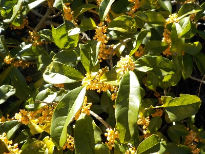
匂いもいいですが、花もキレイです。
金木犀はいいな。
2024/10/13

匂いもいいですが、花もキレイです。
金木犀はいいな。
2024/09/27
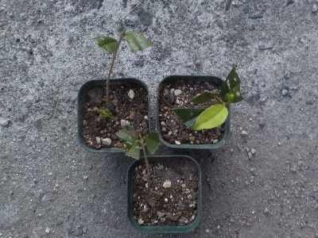
葉っぱが残っている枝が沢山あったので沢山挿し木が成功したと思ったんですが、根っこが出てるのは3本だけでした。
3本鉢上げして、残りはペットボトルに戻しました。
2024/07/17
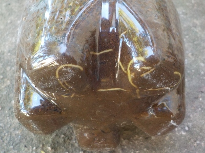
ペットボトルの底から金木犀の根っこが見えてます。
しっかりとした太い根っこがありますね。あと1月くらい経ったら鉢上げしようと思っています。
2024/06/18
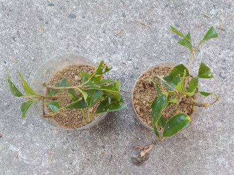
今現在挿木で育っている金木犀は1本だけです。枯れることを考慮して10本くらい挿木しました。
枯れないで大きく成長するのが一番いいんですが、なぜか枯れちゃうんですよね。
2023/10/15
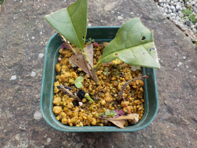
１本だけ葉っぱが残っています。多分根っこが生えているでしょう。
新芽がないので成長するのか不安です。
2023/06/25
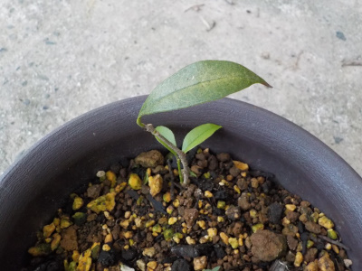
1本だけになりました。小さい苗を育てるのは難しいです。
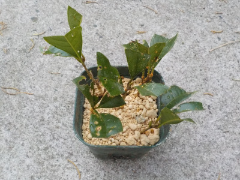
1本ではものたりないので、普通に挿し木しました。挿し木シーズンなのでうまくいって欲しいです。
2023/05/18
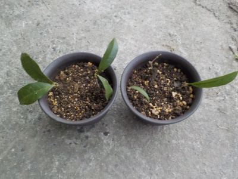
去年の11月に挿し木したキンモクセイです。
根っこは見えなかったですが半年くらい経っても葉っぱがあるので、たぶん小さな根っこが出ているでしょう。
でも枯れる可能性が高そうなので1鉢に2本づつ植えました。
2023/04/22
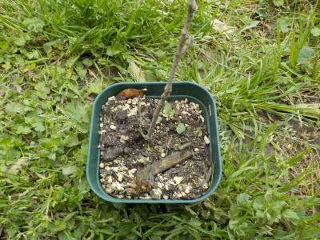
2021年に挿し木したキンモクセイです。ちょっと前までは葉っぱが何枚があったんですが、今日見たら全部なくなっていました。
枯れたかな？どうしてでしょう？
出来たら復活して欲しい。
2022/11/13
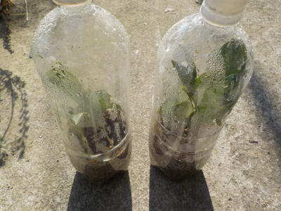
11月なので普通に挿し木したら寒さで枯れるかなと思い、ペットボトルで密閉挿しをしました。
温室っぽくなるので、きっとキンモクセイは快適でしょう。
根っこが出るのを期待してます。
2022/10/16
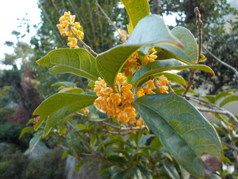
今シーズンは2度咲きがありました。キンモクセイの匂いはいいですね。
来月になったら挿し木をまたやろうと思っています。
2022/06/11
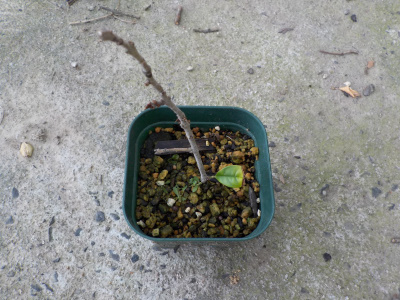
今現在キンモクセイで生き残ったのはこの1本だけです。
この1本も葉っぱ1枚だけなので、枯れてしまうかもしれません。
なんで枯れたんだろう？
2021/10/31
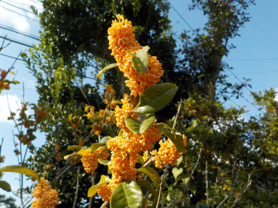
小さい花が沢山咲いてました。
今がピークですね。
2021/10/23
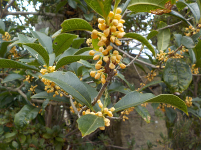
今日は庭に出るとキンモクセイの花の匂いがしていました。
今年は花が多いです。
2021/09/19
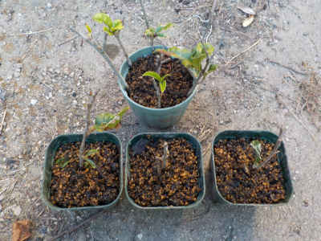
ペットボトルの底から根っこが確認出来たので鉢上げしました。
根っこが出た3本を鉢上げしました。
根っこが出なかったけど葉っぱがまだ残っているものは、再び挿し木しました。
前回は枯らしてしまったので、注意しながら育てようと思います。
2021/07/03
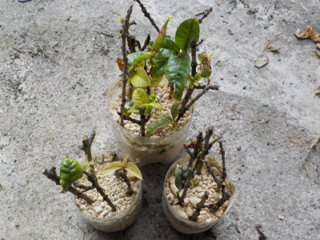
キンモクセイの挿し木に失敗したので、再挑戦です。
葉っぱが付いていない枝があったりして状態は悪いですが、数が多いのでなんとかなるんじゃないかと思っています。
2021/05/15
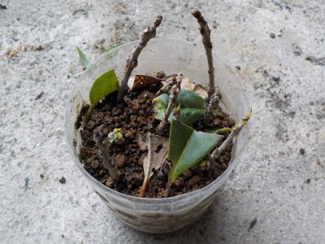
キンモクセイの挿し木は簡単なんて思っていましたが、失敗してしまいました。
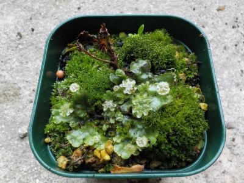
一昨年挿木したキンモクセイは枯れてしまいました。
また一からやり直しします。
2020/08/16
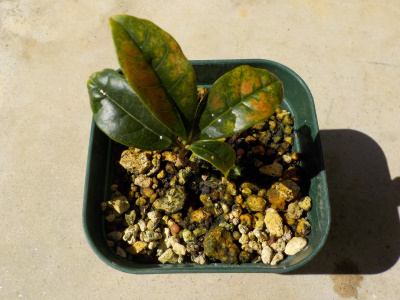
去年挿し木したキンモクセイです。まだ小さいです。
挿し木は4本成功しましたが、秋冬の管理に失敗したようで生き残ったのはこの１本だけです。
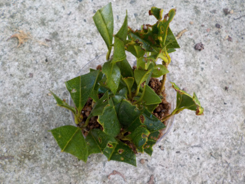
1本じゃ寂しいので、追加で挿し木しました。
小さいペットボトルにギュウギュウに詰め込みました。
今回は春までペットボトルに入れたままにしようかな。
2020/03/08
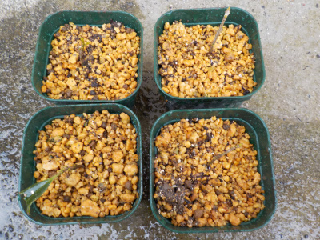
ポットからちょっと大きいプラ鉢に植え替えしました。
もうちょっとしたら葉っぱが出るかな。
2019/09/28
ペットボトルで密封されてるから水やりいらずの簡単挿し木です。
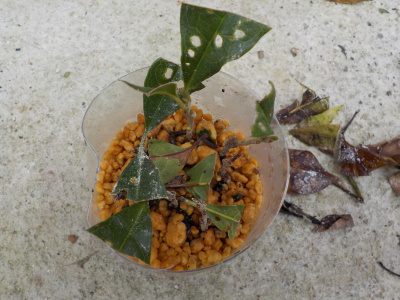
虫食いの葉っぱも枯れずに残りました。
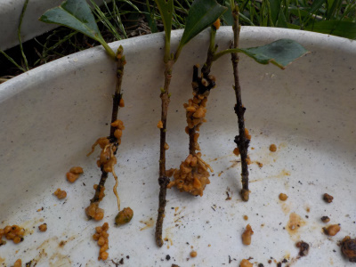
4本ちゃんと根っこも出ています。
キンモクセイの挿し木って初めてしたんですが、どれくらいで花が咲くでしょうね。
2019/06/30
水やり軽減で挿し木です。
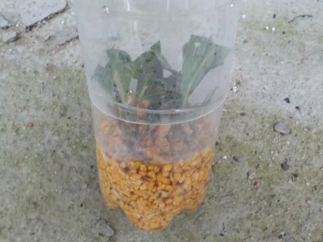
何本成功するかな。
畑仕事じゃないよ。